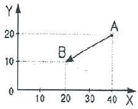
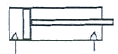
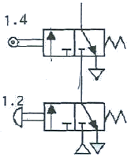
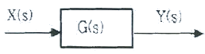
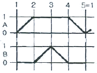
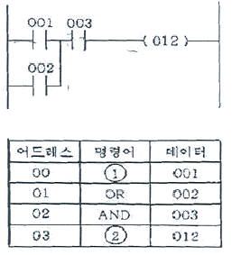
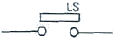
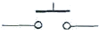

생산자동화기능사 (2006-10-01 기출문제)
1과목: 기계가공법 및 안전관리(대략구분)
1. 급속 귀환 기구를 이용한 기계는?
- 보링 머신
- 셰이퍼
- 밀링
- 선반
(정답률: 52%)

2. 대형 일감의 구멍 뚫기 작업에 적합한 기계로서 드릴링 헤드를 수평방향으로 이동하는 암(arm)과 암을 지지하는 직립 컬럼(vertical column)으로 구성되어 있는 것은?
- 탁상 드릴링 머신
- 레이디얼 드릴링 머신
- 다축 드릴링 머신
- 이동식 드릴링 머신
(정답률: 51%)
3. 선반에서 일반적으로 자동 이송 장치가 설치된 부분은?
- 주축대
- 에이프런
- 심압대
- 베드
(정답률: 58%)
4. 소형 가공물을 한번에 다량으로 고정하여 연삭할 때 가장 적당한 연삭기는?
- 나사 연삭기
- 직립축 평면 연삭기
- 성형 연삭기
- 센터리스 연삭기
(정답률: 39%)
5. 밀링 가공에서 커터의 지름이 50mm이고 회전수가 400rpm이라고 할 때의 절삭 속도(m/min)는?
- 15.7
- 31.4
- 47.1
- 62.8
(정답률: 54%)
6. 선반에서 ø30mm의 SM20C 재료를 노즈 반지름 0.2mm인 초경 바이트로 절삭속도 180m/min으로 가공할 때 이론적 표면 거칠기 Hmax를 구하면? (단, 이송은 0.1mm/rev이다.)
- 0.25μm
- 2.35μm
- 4.25μm
- 6.25μm
(정답률: 32%)
7. 선반에서 일감이 1회전 하는 동안, 바이트가 길이 방향으로 이동하는 거리는?
- 회전력
- 주분력
- 피치
- 이송
(정답률: 56%)
8. 직물, 피혁, 고무 등으로 만든 유연한 원판을 고속 회전시켜 일감의 표면을 매끈하고 광택있게 가공하는 것은?
- 텀플링
- 입자 벨트가공
- 버핑
- 숏 피닝
(정답률: 42%)
9. W, Ti, Ta, Mo, Zr 등의 경질합금 탄화물 분말을 Co, Ni을 결합제로 하여 1400℃이상의 고온으로 가열하면서 프레스로 소결 성형한 절삭 공구는?
- 초경 합금
- 고속도강
- 탄소 공구강
- 합금 공구강
(정답률: 47%)
10. 드릴작업시 주의할 점으로 틀린 것은?
- 작업복과 작업모를 착용한다.
- 칩은 기계를 정지시킨 다음 브러시로 제거한다.
- 드릴작업시에는 보호안경을 쓴다.
- 작은 공작물은 직접 손으로 잡고 작업을 한다.
(정답률: 91%)
2과목: 기계제도(대략구분)
11. 다음 중 운동용 나사에 해당하는 것은?
- 미터가는나사
- 유니파이나사
- 볼나사
- 관용나사
(정답률: 54%)
12. Cr강의 설명으로 맞는 것은?
- 경화층이 얇다.
- 자경성이 없다.
- 단접이 쉽다.
- 조직이 미세하다.
(정답률: 49%)
13. 다음 중 다이캐스팅용 알루미늄합금의 요구되는 성질이 아닌 것은?
- 유동성이 좋을 것
- 열간 취성이 적을 것
- 금형에 대한 점착성이 좋을 것
- 응고수축에 대한 용탕 보급성이 좋을 것
(정답률: 50%)
14. 선반, 밀링머신 등의 동력 전달 장치에서 가장 많이 사용되는 벨트는?
- 평 벨트
- V 벨트
- 직물 벨트
- 털 벨트
(정답률: 70%)
15. 공구용으로 사용되는 비금속재료가 아닌 것은?
- 다이아몬드
- 서멧
- 초경공구
- 고속도강
(정답률: 35%)
16. 베어링 재료의 구비조건이 아닌 것은?
- 내 융착성이 좋을 것
- 길들임이 좋을 것
- 내식성이 작을 것
- 피로강도가 클 것
(정답률: 51%)
17. 일반적인 줄의 재질은 보통 다음 중 어떤 것을 가장 많이 사용하는가?
- 고속도강
- 초경질 합금강
- 주강
- 탄소 공구강
(정답률: 56%)
18. 막대의 양 끝에 나사를 깎은 머리 없는 볼트로서 한쪽 끝을 본체에 튼튼하게 박고, 다른 끝에는 너트를 끼워서 조일 수 있도록 한 볼트는?
- 관통 볼트
- 탭 볼트
- 스터드 볼트
- T 볼트
(정답률: 70%)
19. 다음 중 탈아연 부식현상이 가장 많이 일어나는 재료는?
- 6 : 4 황동
- 톰백
- 7 : 3 황동
- 포금
(정답률: 38%)
20. 다음 중 축에는 홈을 파지 않고 보스에만 키 홈을 파는 키는?
- 성크 키
- 스플라인 키
- 평 키
- 새들 키
(정답률: 41%)
21. 다음 중 전동용 기계요소에 해당하는 것은?
- 리벳
- 볼트와 너트
- 핀
- 체인
(정답률: 66%)
22. 표준형 고속도강의 성분이 바르게 표기된 것은?
- 18% W – 4% Cr – 1% V
- 14% W – 4% Cr – 1% V
- 18% Cr – 8% Ni
- 14% Cr- 8% Ni
(정답률: 60%)
23. 길이가 50mm인 표준시험편으로 인장시험하여 늘어난 길이가 65mm이었다. 이 시험편의 연산율은?
- 20%
- 25%
- 30%
- 35%
(정답률: 52%)
24. 나사의 풀림을 방지하는 것으로서 사용되지 않는 것은?
- 스프링와셔
- 캡 너트
- 분할 핀
- 로크 너트
(정답률: 42%)
25. 인장응력을 구하는 식으로 올바른 것은? (단, A는 단면적, W는 인장하중이다.)
- A × W
- A + W
- A/W
- W/A
(정답률: 68%)
26. 머시닝센터 프로그램에 사용되는 코드의 기능을 잘못 설명한 것은?
- G02 : 시계방향 원호 보간
- G01 : 직선 보간(절삭이송)
- G91 : 절대값 지령
- G28 : 자동 원점 복귀
(정답률: 57%)
27. NC 시스템에서 제어방식이 아닌 것은?
- 위치 결정 제어
- 직선 절삭 제어
- 윤곽 절삭 제어
- 가공 절삭 제어
(정답률: 37%)
28. 다음 중 CAD/CAM 용 출력장치로 사용되지 않는 것은?
- 플로터
- 모니터
- 프린터
- 스캐너
(정답률: 60%)
29. 다음 중에서 CAD/CAM 시스템 도입의 효과로 적당하지 않는 것은?
- 설계 생산성 향상 및 설계 변경 용이
- 복잡한 형상의 정밀가공 용이
- 정확도 향상 및 기술 수준 고도화
- 도면 품질 향상과 데이터 관리의 복잡화
(정답률: 80%)
30. 다음 중 휴지시간 지정을 의미하는 어드레스가 아닌 것은?
- P
- U
- R
- X
(정답률: 50%)
3과목: 메카트로닉스 일반(대략구분)
31. CNC선반 프로그램에서 G96 S200 M03;에서 S200의 내용은?
- 주축속도 200m/rev로 일정제어
- 주축속도 200m/min로 일정제어
- 매분이송 200m/min로 일정제어
- 매회전이송 200m/rev로 일정제어
(정답률: 54%)
32. 3차원의 기하학적 형상 모델링의 종류가 아닌 것은?
- 솔리드 모델링
- 서피스 모델링
- 와이어프레임 모델링
- 어셈블리 모델링
(정답률: 53%)
33. CNC공장기계와 산업용 로봇, 자동반송시스템, 자동화 창고 등을 총괄하여 중앙의 컴퓨터로 제어하면서 소재의 공급투입으로부터 가공, 조립, 출고까지를 관리하는 생산시스템은?
- CAD
- DNC
- NC
- FMS
(정답률: 58%)
34. 머시닝센터 프로그램에서 그림과 같이 A점에서 B점으로 급속 이동시키려고 할 때 증분지령 방법으로 맞는 것은?

- G90 G00 X-20.0 Y-10.0;
- G91 G00 X-20.0 Y-10.0;
- G90 G00 X20.0 Y10.0;
- G91 G00 X20.0 Y10.0;
(정답률: 63%)
35. 컴퓨터에서 데이터를 표현할 때 10진법 9를 2진법으로 바르게 표현한 것은?
- 1001
- 1100
- 0110
- 1110
(정답률: 67%)
36. 다음 공기압 기호의 명칭은?

- 단동 실린더
- 복동 실린더
- 요동 실린더
- 공압모터
(정답률: 77%)
37. 3개의 전환 위치를 갖는 방향 제어 밸브에서 중간 위치는 액추에이터의 어느 위치를 나타내는가?
- 전진위치
- 중립위치
- 후진위치
- 초기위치
(정답률: 81%)
38. 절대압력과 게이지압력 그리고 대기압의 관계를 바르게 나타낸 식은?
- 절대압력 = 게이지압력 + 대기압
- 게이지압력= 절대압력 + 대기압
- 게이지압력 = 대기압 = 절대압력
- 절대압력 = 게이지압력 × 대기압
(정답률: 66%)
39. 공압 실린더 중 운동 에너지를 크게하여 펀칭, 리벳팅, 프레싱 등과 같은 작업에 가장 적합한 것은?
- 탠덤 실린더
- 충격 실린더
- 텔레스코프 실린더
- 케이블 실린더
(정답률: 58%)
40. 그림의 회로에서 1.4와 1.2의 동작조건으로 옳은 것은?

- OR회로
- AND회로
- NAND회로
- EX-OR회로
(정답률: 55%)
41. 부하변화에 대하여 일정한 배압을 형성시켜주는 유압회로는?
- 블리드오프회로
- 카운터 밸런스회로
- 로킹회로
- 무부하회로
(정답률: 66%)
42. 유체의 운동 에너지를 기계적 에너지로 변환하는 장치는?
- 송풍기
- 팬(Fan)
- 압축기
- 실린더
(정답률: 71%)
43. 공압의 특징에 대한 설명으로 잘못 된 것은?
- 무단변속이 가능하다.
- 작업속도가 빠르다.
- 배관이 간단하다.
- 힘의 전달이 어렵고, 힘의 증폭이 불가능하다.
(정답률: 74%)
44. 공기 압축기를 선정할 때 고려해야 할 사항이 아닌 것은?
- 공급 체적
- 공급 압력
- 압축기 구동 방식
- 압축기 제작방법
(정답률: 84%)
45. 다음 유압 펌프의 압력이 상승하지 않을 때 점검할 부위가 아닌 것은?
- 체크 밸브
- 유압 회로
- 언로드 밸브
- 릴리프 밸브
(정답률: 41%)
46. 로봇이 3차원 공간에서 임의의 위치에 있는 물체를 잡는데 필요한 자유도는?
- 4개
- 5개
- 6개
- 3개
(정답률: 79%)
47. 시퀀스 제어계에서 제어시키고자하는 장치 혹은 기기를 무엇이라 하는가?
- 제어명령
- 조작부
- 제어대상
- 검출부
(정답률: 62%)
48. CCD 카메라로 읽은 화상을 보고 대상물체의 모양이나 양호 또는 불량 상태를 판별하는 센터는?
- 로드셀
- 광전센서
- 비젼센서
- 근접센서
(정답률: 59%)
49. PLC 기능 중에서 특정한 I/O 상태 및 연산 결과 등을 기억하는 기능은?
- 레지스터
- 연산기능
- 카운터기능
- 인터럽트
(정답률: 61%)
50. 미리 정해진 순서 또는 조건에 따라 제어의 단계를 순차적으로 행하는 제어로 계전기, 타이머, 계수기 등의 기능을 반도체 소자로 대체하여 무접점화를 이룬 기기는?
- NEMA
- PC
- INTEL
- PLC
(정답률: 86%)
51. 자동화시스템의 구성에서 인간의 신체와 자동화요소와 비교하였을 때 잘못된 것은?
- 눈-감지기
- 피부-감지기
- 팔, 다리-액추에이터
- 신경계통-제어신호처리장치
(정답률: 74%)
52. 다음의 그림과 같은 요소의 전달 특성을 직렬 결합하여 전달함수로 표시하면 어떻게 되는가?

- Y(s) = G(s) · X(s)
- Y(s) = 1/G(s) · 1/X(s)
- G(s) = Y(s) · X(s)
- G(s) = 1/Y(s) + 1/X(s)
(정답률: 58%)
53. 제어시스템의 동작상태를 나타내는 방법 중 다음 그림과 같이 작업요소의 작업순서를 동작순서에 따라 단계별로 표시해주는 제어 표현방법은?

- 위치도
- 기능선도
- 래더 다이어그램
- 변위-단계선도
(정답률: 65%)
54. 공장자동화 시스템 도입에 의해 얻어지는 기대효과가 아닌 것은?
- 생산능력이 증가한다.
- 무인화가 가능하다.
- 신뢰성이 향상된다.
- 시설투자비가 감소한다.
(정답률: 84%)
55. 센서의 선정시 고려해야 할 사항 중 거리가 먼 것은?
- 정확성
- 감지거리
- 작업자의 기술수준
- 신뢰성
(정답률: 89%)
56. 다음 중 생산분야에서 사용하는 물류 기기가 아닌 것은?
- 무인 반송차
- 컨베이어
- 자동창고
- 머니플레이터
(정답률: 66%)
57. 미리 정해놓은 순서, 또는 일정한 논리에 의해 정해진 순서에 따라 진행하는 제어는?
- 정치제어
- 추종제어
- 시퀀스제어
- 프로세스제어
(정답률: 89%)
58. PLC 프로그램 명령어 중에서 논리합(병렬) 조건으로 접속 되어있는 경우에 사용하는 명령어는?
- LOAD
- AND
- OR
- NOT
(정답률: 70%)
59. 다음 회로를 코딩(coding)할 때 빈칸 ①, ②에 들어갈 명령어는?

- ① OR, ② AND
- ① NOT, ② LOAD
- ① AND, ② END
- ① LOAD, ② OUT
(정답률: 43%)
60. 푸시 버튼 스위치의 a 접점 기호인 것은?


(정답률: 79%)